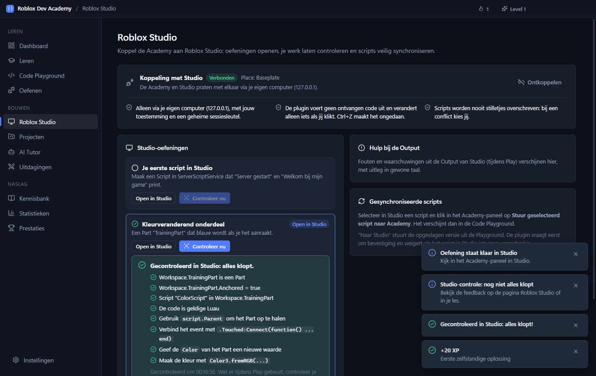

Leer Roblox programmeren. Vanaf nul.
Je hoeft nog niets van code te weten. De Academy leert je stap voor stap zelf Roblox-scripts schrijven in Luau, in het Nederlands, met oefeningen die echt worden nagekeken.
Download voor Windows
Wat je leert
Eerste stappen
Wat code is, je eerste script, variabelen, getallen en tekst. Ook waar alles staat in Roblox Studio.
Beslissen en herhalen
If-statements, and/or/not en lussen. Je bouwt een winkelcontrole en een aftelklok.
Functies en tabellen
Herbruikbare code, schadeberekening en een compleet inventarissysteem.
Fouten in gewone taal
Elke fout wordt uitgelegd: wat er misging, waarom, op welke regel, en een hint. Het antwoord krijg je pas als je erom vraagt. Je code wordt echt uitgevoerd in Luau en getest met verschillende waarden, dus gokken werkt niet.


Werkt samen met Roblox Studio
Installeer met één klik de Academy-plugin. Open oefeningen in Studio en laat je werk controleren. Scripts synchroniseer je veilig, zonder dat er iets stilletjes wordt overschreven. De koppeling loopt alleen via je eigen computer.
Installeren
- Klik op Download voor Windows en open
Roblox-Dev-Academy-Setup.exe. - Toont Windows "Windows heeft uw pc beschermd"? Klik op Meer info en dan Toch uitvoeren. De app is (nog) niet digitaal ondertekend.
- Kies een map en klik op Installeren. Je begint met les 1: Wat is code?